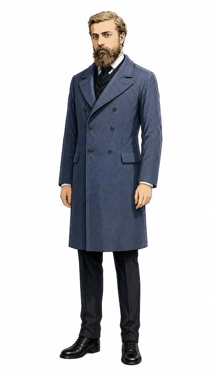
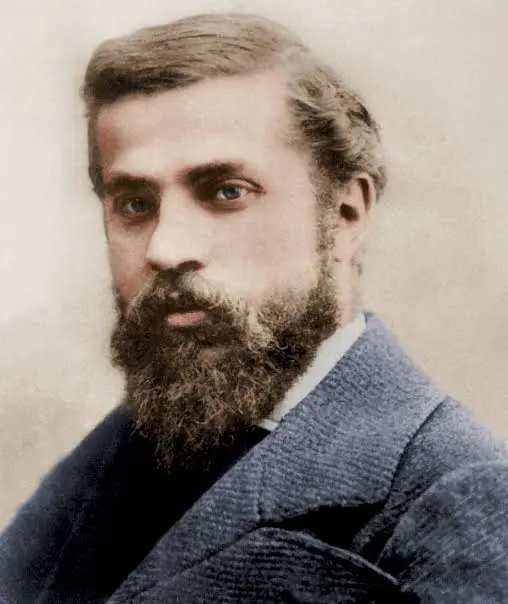

Antoni Gaudí · 逝世百週年紀念
1926 · 6月10日 · 2026
百週年紀念
2026年，耶穌基督之塔以 172.5公尺 封頂，
成為世界最高教堂。
144年的集體意志，在這一刻圓滿。
「我的客戶並不著急。」 — Antoni Gaudí
幾何哲學
高第的「師法自然」超越表面裝飾，深入自然的生成秩序與物理法則。他觀察樹木、骨骼、貝殼，關注的是它們如何以最少材料達成最大穩定性。
柔性鏈條在重力下自然下垂形成的曲線，倒轉後得到理想受壓拱形，消除彎矩與側推力。讓形式由力學本身來決定。
有效將載重導入支撐系統，材料更薄卻保有承載力，形成具有整體性的受力殼層。
模仿自然界分枝邏輯，柱體自下而上分叉，讓垂直載重沿多條路徑轉移並分散至地面。
尺度遞迴、枝狀分叉、自相似結構，以曲率取代直線直角，創造連續流動的空間場域。
影像


石光 · 永恆
三大立面
高第將聖家堂構想為一部石刻聖經，使不識字的信眾僅憑凝視建築，便能領悟基督信仰的歷史與奧義。
耶穌降生的喜悅、萬物復甦。繁複有機裝飾，融入烏龜、變色龍等動植物元素。高第生前唯一親自主導的立面，1984年列為世界文化遺產。
耶穌受難、犧牲與死亡的悲劇感。線條簡潔剛硬，蘇比拉奇斯的骨架雕塑傳達極致痛苦與張力，與誕生立面形成強烈對比。
人類的起源、審判、救贖與永恆榮耀。規模最宏大的主入口，預計2034–2035年完工。設有橫跨馬略卡街的巨型階梯廣場。
塔樓體系
| 象徵 | 數量 | 高度 | 狀態 |
|---|---|---|---|
| 十二門徒 | 12座 | 98–112m | ✓ 8座完成 |
| 四位福音書作者 | 4座 | 135m | ✓ 全數完成（2023） |
| 聖母瑪利亞 | 1座 | 138m | ✓ 2021年完成 |
| 耶穌基督 ★ | 1座 | 172.5m | ✓ 2026年祝聖 |
官方虛擬導覽
由聖家堂官方提供的 360° 全景導覽，共十個空間分區。
資料來源：Basílica de la Sagrada Família 官方虛擬導覽
「直線屬於人類，曲線屬於上帝。」 — Antoni Gaudí
拓樸邏輯
聖家堂的幾何過渡是一套從「城市邊界的外部立面」轉換為「以曲率與光線組織的內部宇宙」的數理邏輯演變過程。
高密度的雕塑立面與塔樓群建立起敘事分區與受力骨架，將力與義編碼於建築表面。
門廊、迴廊、塔基構成中介過渡帶，動線從線性轉向迴旋，感知從平面分區切換為曲率導向。
載重系統轉移至森林般的分枝柱與連續拱頂，將外部結構語言改寫為可行走的曲面環境。
外部向上收束的塔樓群 ↔ 內部向上分枝的柱群。不同形態，相同拓樸關係，同一幾何語法的不同尺度轉譯。
建造歷程
3月19日，聖約瑟瞻禮，聖家堂正式奠基動工。高第於隔年接手設計主導。
11月30日，高第親眼見證聖家堂第一座塔樓「貝爾納貝塔」完工，是他生前看到的唯一塔樓。
6月10日，高第因電車事故辭世，安葬於聖家堂地下墓室。
2026年，教宗良十四世親臨祝聖主塔。
誕生立面與地下墓室被聯合國教科文組織列為世界文化遺產。
12月，138公尺高的聖母瑪利亞塔完工，頂部安裝巨大鋼製發光十二角星。
11月12日，四位福音書作者塔（各135m）全數落成，舉行聯合點燈儀式。
2月20日，172.5公尺主塔完成十字架安座，登頂世界最高教堂。6月10日，百週年紀念日，教宗主持祝聖彌撒。
「聖家堂是最後的大教堂。
它是宗教、科學、歷史、詩學與人道主義的聖殿。」 — 巴塞隆納建築評論